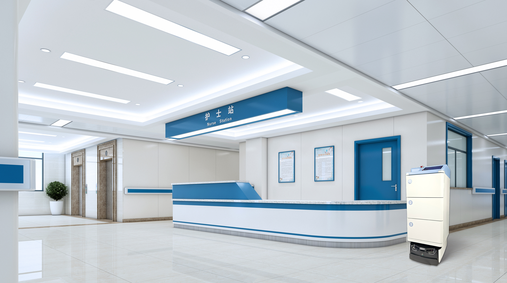

医院物流机器人“夜间静默配送”如何不扰民？低速避让与噪音合规

夜间是医院物流的"黄金窗口"：病区安静、通道空旷，但机器人一旦吵闹或乱撞，反而添乱。双擎 AMR 的夜间静默配送，靠的是低速避让与合规设计。
低速避让
双擎 AMR 基于多模态感知与融合，在夜间以低速巡航，对行人、轮椅、推车实时避让，遇电梯、门禁自动联动，确保人机共存安全。RCS 可编排夜间专属任务，避开晨间高峰。
噪音与电磁合规
医疗场景对噪音与电磁干扰敏感。双擎医院物流机器人遵循医疗合规要求，在设备噪音、EMC 等方面满足院感与医疗环境使用门槛，减少对病患休息与精密设备的影响。
24 小时不间断
配合自动回充，AMR 可支撑 24 小时无人化配送，把夜间的标本、药品、物资转运做成"不打扰的常态"。
真实落地佐证
双擎医院配送机器人已在贵州省人民医院、北京中日友好医院、上海长海医院等机构运行，在真实院区验证了昼夜运行的稳定性。
与人工的分工
夜间静默配送不意味着替代人，而是把护士和运送员从低价值、高频次的跑腿中解放出来。机器人跑标准化的药品、标本、物资转运，人聚焦护理与判断，二者在 RCS 调度下形成清晰分工，把人力用在更需要的岗位。
真实环境验证
双擎医院配送机器人已在贵州省人民医院、北京中日友好医院、上海长海医院等机构运行，在真实院区验证了昼夜运行的稳定性。夜间静默配送不是实验室设想，而是已经跑通的日常能力。
小结
夜间静默配送的本质是"把打扰降到最低，把效率提到最高"。低速、避让、合规，再加上人机分工，三者合一，医院物流才能真正昼夜不打烊。